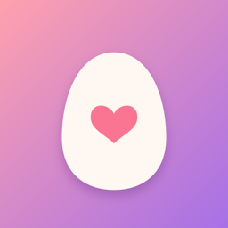

50 “Open when…” letter ideas for a long distance partner
“Open when…” letters are sealed notes your partner opens at the right moment: a bad day, a sleepless night, the morning of a flight. They turn the distance into something you can hold. Here are 50 ideas, sorted by moment, and how to write them so they still feel right months later.
For the hard days
- Open when you had a terrible day at work
- Open when you feel alone in a room full of people
- Open when you miss me so much it hurts
- Open when we just had a fight
- Open when you doubt whether this is worth it
- Open when you got bad news
- Open when you feel homesick
- Open when you can't stop overthinking
- Open when you need a reason to smile
- Open when you feel like giving up on something you love
For nights and quiet moments
- Open when you can't sleep
- Open when it's raining and you're stuck inside
- Open when you're eating dinner alone
- Open when you wake up from a bad dream
- Open when it's 3am and you're thinking about us
- Open when you're on a long train or bus ride
- Open when you can't hear my voice tonight
- Open when the house is too quiet
Around a reunion
- Open when you're booking the next flight
- Open when it's the night before we meet
- Open when you're at the airport
- Open when the plane is taking off
- Open when you're in the taxi to me
- Open when we just said goodbye at the airport
- Open when you're unpacking after our visit
- Open when the countdown hits 7 days
To celebrate
- Open when it's your birthday
- Open when it's our anniversary
- Open when you got the job
- Open when you passed the exam
- Open when it's Valentine's Day and we're apart
- Open when it's the first snow
- Open when it's New Year's Eve in your time zone
- Open when you did something brave
Just because
- Open when you want to know how we met (my version)
- Open when you need a list of things I love about you
- Open when you want a plan for our first day together
- Open when you need a song recommendation
- Open when you want to laugh at an old photo of me
- Open when you want to know what I'm doing right now
- Open when you need a hug (instructions included)
- Open when you want to imagine our future home
- Open when you want a secret I've never told you
- Open when you're bored
- Open when you finished a good book
- Open when you're cooking our favourite recipe
- Open when you saw something that reminded you of me
- Open when it's the first day of a new season
- Open when you want to start a tradition
- Open when you just want to hear “I love you”
Tips
- Write each letter for the moment, not for today: ask yourself what your partner will need to hear right then.
- Add something physical when you can: a photo, a tea bag, a pressed flower, a playlist code.
- Number them or date them so the set lasts: one for each month apart is a good rhythm.
- Keep a few short ones. A two-line note for a bad day often lands better than a page.
Made by a long distance couple.
Magpie has “Open when…” letters built in: you write them on your phone, they stay sealed on your partner's phone until the moment comes, and you see when they've been opened.
Join the Magpie waitlist